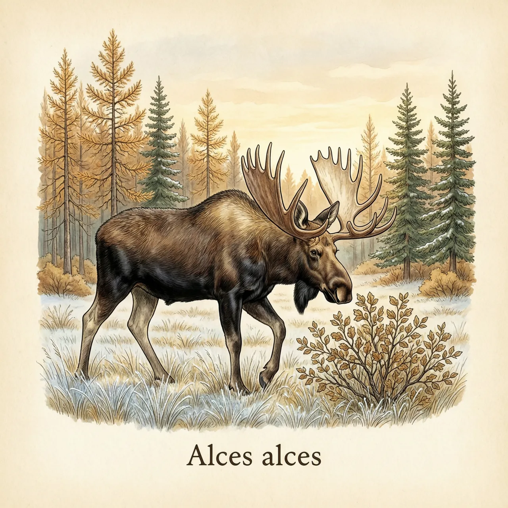
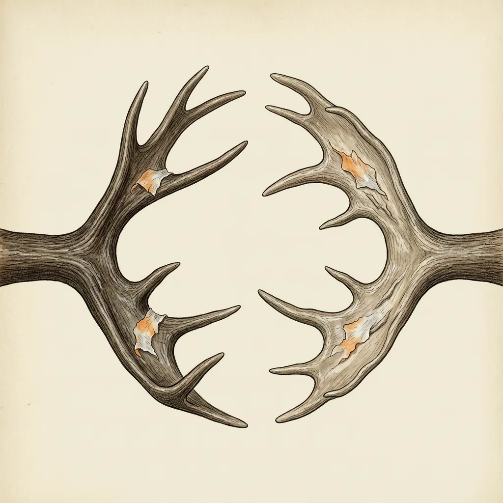

驼鹿是现存最大的鹿，只生活在北半球针叶林和混交林，中国仅见于大兴安岭和小兴安岭北部。雄性在交配季后脱落鹿角以节省能量过冬，春天重新生长，约需3-5个月长成，是生长最快的动物器官。陆地上几乎无敌手的它，在北美西北海岸渡海觅食时会被虎鲸攻击。
成年驼鹿平均肩高1.5-1.8米，肩比臀高，站着像一匹斜了背的骆驼，中文名就是这么来的。它是鹿科里现存最大的一种，也是驼鹿属下的唯一种。别的鹿多住在山地或草原，驼鹿住的是北半球温带至亚北极的针叶林与混交林：在中国只出现在大兴安岭和小兴安岭北部；在北美，从加拿大、阿拉斯加、落基山脉向南直到科罗拉多州，密歇根上半岛和苏必略湖的皇家岛上也有。水边是它常见的去处，下垂的上唇把水草卷进嘴里，有时整个身子扎进水里采食。
驼鹿每年把身上最大的器官扔掉一次。交配季一结束，雄性就脱落鹿角，以此省下能量过冬；新角在春天重新长出来，约需3-5个月才能完全长成，是生长最快的动物器官，生长期间外面包着一层皮，长成就脱掉。一个耐人寻味的旁证是：被阉割的雄性会很快弃掉现有的角，再长出一对形状不同、终身不再脱落的角。美洲原住民神话里的怪角鹿，源头就被指认为这类个体。
完全长大的驼鹿在陆地上少有对手：狼群的威胁主要落在雌鹿和幼鹿身上，东北虎会猎食它，灰熊似乎吃它的腐肉多于亲手猎杀。真正意外的死法发生在海里。在北美洲西北海岸，驼鹿经常在沿海岛屿之间渡海游泳寻找食物，这时容易遭到虎鲸的攻击。现存最大的鹿，天敌名单里有一条鲸。
